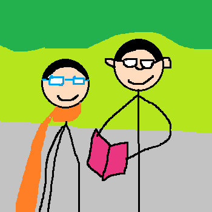

jnvc583/diary
返回日记主页
第
176
篇 日记
2026年03月14日 晴 Sat.
日常生活：
第2次登好汉坡

今天上午，父亲带着我、妈妈和妹妹，跟约来的陈仁叔叔（跟父亲是同学关系）和陈熠然（陈仁叔叔的儿子）一起去爬庐山好汉坡。陈仁叔叔把车停在庐山索道下，父亲先去庐山索道那把陈仁叔叔和陈熠然接到好汉坡下，然后我们上山。
在山下，我求父亲给我买了个登山用的竹棍，陈仁叔叔也要了一根。